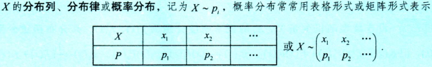
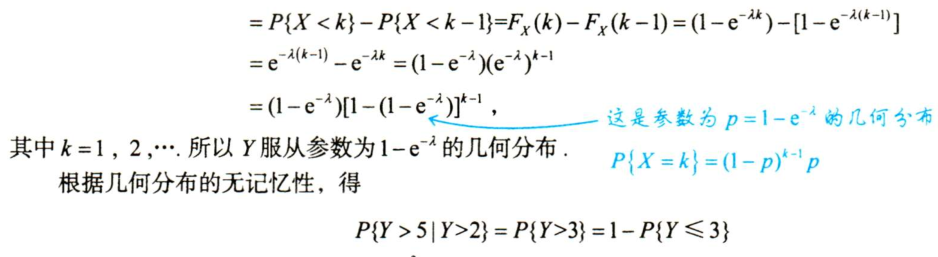
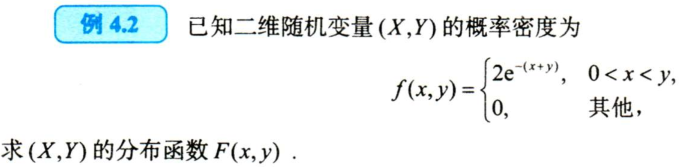

概率论一轮复习
记录概率论的学习内容
目录

一、随机事件和概率
1.古典概型
2.几何概型
3.重要公式
4.独立性判定
二、一维随机变量及其分布
1.判分布
随机变量：$X:\Omega\rightarrow\mathbb{R}$
分布函数：$X\sim F(x),F(x)=P(X\leq x),F(x)\in[0,1]$

对于连续型$F(x)=\int_{-\infty}^{x}f(t)dt,x\in\mathbb{R}$
A
B选项解法二：也可以使用部分积分公式$\int udv=uv-\int vdu$
部分积分公式推导过程
其中：$u=v=F(x)$
带入部分积分公式：$\int F(x) dF(x)=[F(x)F(x)]|_{-\infty}^{+\infty}−\int F(x)dF(x)$
故 $\int F(x) dF(x)=\frac{1}{2}$
则 $g_2(x)$ 可以作为概率密度
$g_1(x),g_2(x),g_3(x)$可以作为概率密度， $g_4(x)$ 不能作为概率密度
C
2.求分布
离散型分布
0-1分布 $X\sim B(1,p),X(伯努利计数变量)\sim \left(\begin{array}{l}0&\quad1\p&1-p\end{array}\right)$
二项分布 $X\sim B(n,p)$ 分布律 $U_k=P{X=k}=C_n^kp^k(1-p)^{n-k}$
几何分布 $X\sim G(p)$ 首中即停止 $P{X=k}=p\cdot (1-p)^{k-1}$
无记忆性
超几何分布
- 柏松分布 稀有事件的概率 $P{X=k}=\frac{\lambda^k}{k!}e^{-\lambda}$，$EX=\lambda$
泊松定理 若$X\sim B(n,p)$，当$n$很大，$p$很小，$\lambda=np$ 适中时，二项分布可用泊松分布近似表示；一般地，当$n>20,p<0.05$ 时，用泊松近似公式通近二项分布效果比较好，特别当$n>100,np<10$ 时，逼近效果更佳
B

8
D
连续型分布
均匀分布 $X\sim U(a,b)$
指数分布 $X\sim E(\lambda)$
$t,s>0$时，$P{X\ge t+s|X\ge t}=P{X\ge s}$ 称为指数分布的无记忆性
$EX=\frac1\lambda$称为平均寿命，也称为平均等待时间，$\lambda$称为失效频率，它是一个常数，失效频率不变，元件无损耗，才有无记忆性
正态分布 $X\sim N(\mu,\sigma^2)$
$\mu=0,\sigma=1$时为标准正态分布
此分布为威布尔分布，是考虑元件损耗的寿命分布；若$m=1$，则成为指数分布，是理想元件（无损耗）的寿命分布
A
3.用分布
A
A
A
注意这里是$\ge$
$k\in[1,3]$
三、一维随机变量函数的分布
1.离散型->离散型


2.连续型->连续型（或混合型）
感觉讲解过程很复杂，还是直接看例题吧
不是哥们，这玩意有点逆天
解法二有点不理解，但是好厉害···
3.连续型->离散型
若$X\sim f_X(x)$，且$Y= g(X)$是离散型随机变量；首先确定$Y$的可能取值$a$，然后通过计算概率$P{Y=a}$求得$Y$的概率分布
题解给的做法，直接用几何分布的无记忆性

四、多为随机变量及其分布
1.判分布
$F(x,y)$是联合分布函数的充要条件：单调性，右连续性，有界性，非负性
2.求分布
求联合分布
求$F(x,y),p_{ij},f(x,y)$
- $(X,Y)\sim p_{ij}$，则$F(x,y)=P{X\leq x,Y\leq y}=\sum_{x_i\leq x,y_i\leq y}p_{ij}$
- $(X,Y)\sim f(x,y)$，则$F(x,y)=P{X\leq x,Y\leq y}=\int_{-\infty}^{+\infty}du\int_{-\infty}^{+\infty}f(u,v)dv$
二维均匀分布
二维正态分布 $(X,Y)\sim N(\mu_1,\mu2;\sigma_1^2,\sigma_2^2;\rho)$
求边缘分布
求条件分布
判独立

3.用分布

$a=0.1,b=0.1,c=0.5,d=0$

五、一维随机变量函数的分布
1.多维->一维
2.
3.
六、数学特征
1.数学期望
2.方差
3.
七、大数定理和中心极限定理
1.依概率收敛
设随机变量$X$与随机变量序列${X_n}(n=1,2,3,…)$，如果对任意的$\varepsilon>0$，有
则称随机变量序列${X_n}$依概率收敛于随机变量$X$，记为
$\lim_{n\to\infty}X_{n}=X(P)$ 或 $X_{n}{\overset{p}\longrightarrow}X(n\to\infty)$
2.大数定律
切比雪夫大数定律
相互独立 方差存在且一致有上界
则${X_n}$服从大数定理 $\frac1n\sum_{i=1}^nX_i\overset{p}\longrightarrow\frac1n\sum_{i=1}^nEX_i$
伯努利大数定律
$\mu_n$是$n$重伯努利实验中事件$A$发生的次数，$A\sim B(n,p)$，则 $\frac{\mu_n}n\overset{p}\longrightarrow p$
辛钦大数定律
相互独立 同分布 期望存在
则 $\frac1n\sum_{i=1}^nX_i\overset{p}\longrightarrow\mu$
大数定律同一个结论
$\frac1n\sum_{i=1}^nX_i\overset{p}\longrightarrow E(\frac1n\sum_{i=1}^nX_i)$
3.中心极限定理
列维-林德伯格定理
棣莫弗-拉普拉斯定理
中心极限定理同一个结论
八、统计量及其分布
1.统计量
样本均值 $\overline{X}=\frac1n\sum_{i=1}^{n}X_i$
样本方差 $s^{2}=\frac{1}{n-1}\sum _ {i=1}^ {n}(X_i-\overline{X})^{2} = \frac {1}{n-1}(\sum _ {i=1}^ {n}X_ {i}^ {2}-\overline{X}^2)$（无偏估计）
样本 $k$ 阶原点矩 $ A_ {k} = \frac {1}{n} \sum _ {i=1}^ {n} x^ {k} (k=1,2, \cdots )$
样本 $k$ 阶中心矩 $ B_ {k} = \frac {1}{n} \sum _ {i=1}^ {n} (X_ {i}-\overline {X})^ {k} (k=2,3, \cdots )$
顺序统计量 将样本n个观测量按其取值从小到大的顺序排列
2.统计量的分布
正态分布
略
$\chi^2$分布
3.正态总体下的常用结论
九、参数估计与假设检验
1.点估计和评价标准
2.区间估计与假设检验
Append
还有两个小时进考场，浅速通一下概率论
1 | 基本概率 |
协方差
$D(aX+bY)=a^2D(X)+b^2D(Y)+2abCov(X,Y)$
$Cov(X,Y)=E(XY)-E(X)E(Y)$
$\rho_{XY}=\frac{Cov(X,Y)}{\sqrt{D(X)}\cdot\sqrt{D(Y)}}$
矩估计量和最大似然估计量
显著性水平应用题
要检验的假设是 $H_0: \mu$ 符合要求, $H_1:\mu$ 不符合要求（2分）
.gif)
.gif)
.gif)
.gif)
.gif)
.gif)
.gif)